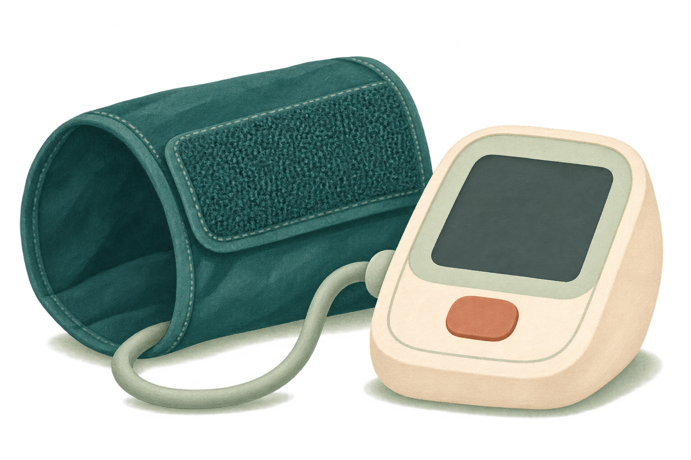

Jordan’s story · Scene 2 of 3
“Will this plan work for me?”
Jordan’s healthcare team found that her blood pressure was dangerously high. After treatment and monitoring, they have assessed her as ready to return home with a follow-up plan.
Her plan includes medicine, regular blood-pressure checks, and a follow-up appointment. The nurse explains that these steps remain important even though Jordan feels better.
Jordan understands the instructions, but she does not own a blood-pressure monitor. She is also unsure whether her prescription is covered.
“I want to follow the plan. I just don’t know how I’m going to pay for everything.”
Help Jordan start the conversation
Jordan worries that mentioning money will be uncomfortable. The nurse asks:
“Is there anything that could make this plan difficult to follow at home?”
Choose a phrase from each section to build Jordan’s response. There is more than one good way to ask.
Jordan could say:
There is more than one good way to ask.
Jordan has explained what she needs, described a barrier, and asked for support. She does not have to share every detail of her finances to begin the conversation.
Working out the details
The nurse listens and responds:
“Thank you for telling me. Let’s check the options together before you leave.”
With Jordan’s agreement, the team helps her look into medication coverage, blood-pressure checks, and follow-up arrangements.
Open each card to see what Jordan and the team could discuss.
Getting her medicine
Jordan could ask:
“Can the pharmacist check whether my prescription is covered and what I would need to pay?”
The pharmacist can check her coverage and discuss any cost concerns with her and the prescribing team.
In Ontario, OHIP+ may cover eligible prescriptions for people aged 24 or younger who have OHIP and no private drug plan. Jordan’s age alone does not confirm that her prescription is covered. The pharmacist needs to check her circumstances and the medicine.
Do not skip or change prescribed medicine because of cost without contacting the pharmacist or prescribing team.
Learn about OHIP+Checking her blood pressure
Jordan could ask:
“I don’t have a monitor. Where else could I get my blood pressure checked?”
The team can explore whether suitable loan equipment or scheduled checks through a local service are available. They need to confirm an option that meets Jordan’s care needs.

If home monitoring is part of the agreed plan, Jordan should receive instructions on using the monitor and what to do with the results. Available options vary by service and location.
Knowing who will follow up
Jordan could ask:
“Who will review my results, and how do I contact them?”
Because Jordan does not yet have a regular primary care provider, the team confirms who is responsible for her follow-up.
Together, they write down the appointment details, contact information, and what Jordan should do if she cannot attend.
Is the plan ready to take home?
Jordan and the nurse review the arrangements. Which details should be clear before she leaves?
A workable plan is a shared responsibility.
Jordan explains the plan in her own words. The nurse checks that the explanation was clear and answers her remaining questions.
Together, they confirm how she will obtain her medicine, where her blood-pressure checks will happen, and who will follow up. Jordan leaves with written instructions and contact information.
At home, Jordan begins following her care plan. She wants to understand more about postpartum preeclampsia and find community social supports, so she searches online. As she reads, she wonders which information she can trust.
Continue to Scene 3